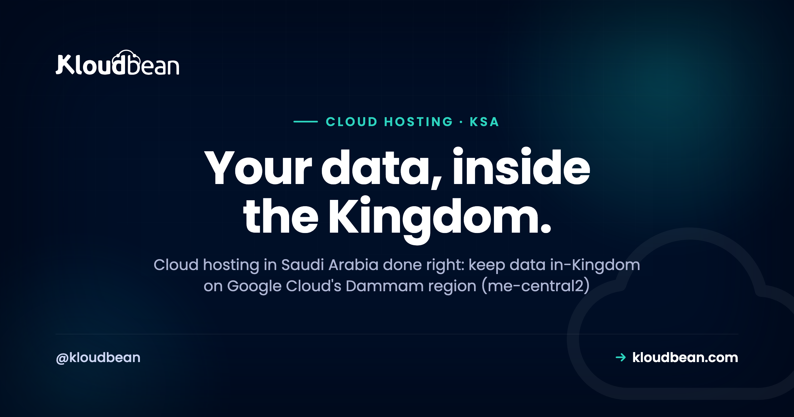

Cloud Hosting in Saudi Arabia: Keeping Your Data In-Kingdom

Search "cloud hosting Saudi Arabia" and most of what comes back is generic resellers who can't tell you which country your data will physically sit in. That's the wrong place to start. If you sell to Saudi users, bid on a government or enterprise tender, or hold personal data on people in the Kingdom, your first question isn't price or vCPU count. It's location. Where do the bytes actually live, and how far are they from your users in Riyadh, Jeddah, and Dammam? This is a buyer's guide to hosting inside Saudi Arabia: what in-Kingdom residency really means, what it doesn't, and how to set it up without overclaiming.
Yes. On Kloudbean you provision on Google Cloud's Dammam region (me-central2), a region physically inside Saudi Arabia, so your server, your managed database, and your backups all sit on Saudi soil. That settles the residency question at the infrastructure layer. The app-level parts of PDPL, what you collect and how you handle it, stay your responsibility.
Is cloud hosting in Saudi Arabia different from hosting anywhere else?
Technically the server boots the same way. What changes is one word on the map: location. Plenty of hosts market a "Middle East" or "MENA" presence, then quietly run everything from Frankfurt, Amsterdam, or a US region. For a lot of apps that's completely fine. For a Saudi audience with residency or latency requirements, it isn't, because the data never actually enters the country.
One fact shapes every decision on this page. Kloudbean provisions across seven clouds (AWS, AWS Lightsail, Google Cloud, Linode, Vultr, DigitalOcean, and UpCloud), and among them the in-Kingdom option is Google Cloud's Dammam region, code-named me-central2, which sits physically inside Saudi Arabia. Pick that region when you launch and your workload lives in the Kingdom. Pick any other and it doesn't, however "regional" the marketing sounds.
So the real difference with hosting in Saudi Arabia is that "the region" is not a soft preference. It's the whole decision. Get it right at launch and residency is a non-event. Get it wrong and you're migrating a live database under a procurement deadline while a security team waits on the call. If the concept of residency is new to you, the plain-English version lives in data residency explained.
Why host inside the Kingdom at all? Three forces
Three things push teams toward in-Kingdom hosting, and they don't carry equal weight. Knowing which one is driving your decision keeps you from over-engineering.
1. Latency to Riyadh, Jeddah, and Dammam
Distance is physics, not marketing. Riyadh to a Frankfurt data center is roughly 4,000 km. Even at the speed of light through fiber, that distance puts a floor of tens of milliseconds on every round trip, before you add routing and congestion. Real-world it's often 90 to 130 ms. Serve the same user from Dammam and that floor mostly disappears, dropping into the single digits or low tens. For a static brochure page nobody notices. For a checkout, a dashboard, an API that makes a dozen calls per screen, or anything real-time, it's the difference between snappy and sluggish. Low latency to Riyadh and Jeddah users is the most tangible, least debatable reason to host in-Kingdom.
2. PDPL and data-residency expectations
Saudi Arabia has a real data-protection law: the Personal Data Protection Law, or PDPL, overseen by SDAIA (the Saudi Data and AI Authority). It's the Kingdom's counterpart to what the GDPR is in Europe, and it sets rules for how personal data on people in Saudi Arabia is collected, processed, and transferred. Data residency in Saudi Arabia isn't always a hard legal wall for every business, but for many use cases, especially government-adjacent, financial, and health data, keeping personal data in-Kingdom is either required or strongly expected. Hosting on Saudi soil takes the location question off the table so you can focus on the parts of PDPL that are actually about your app.
3. Government and enterprise procurement
This one closes or kills deals. Saudi government bodies and large enterprises routinely ask where data will be stored before they sign, and a good number of them require it inside the country. Vision 2030 and the Kingdom's cloud-first direction have only sharpened that expectation. In a procurement review, "our data sits in the Dammam region, inside Saudi Arabia" is a clean, winning answer. "We're hosted in Europe but it's very secure" is not. If you're bidding for Saudi contracts, in-Kingdom residency is often the price of entry, not a nice-to-have.
The shape of in-Kingdom hosting
Before the setup, here's the picture. Your Saudi users hit a short network hop into the Dammam region, where your managed server and database live together in the same account, and every copy that matters (the database, the backups) stays inside the Kingdom.
The in-Kingdom region Kloudbean runs on: GCP Dammam (me-central2)
Let's be precise, because this is where marketing tends to blur. Kloudbean does not own data centers in Saudi Arabia. What it does is provision and fully manage your stack on top of the world's largest cloud providers, and among the seven it supports, the one with a region physically inside the Kingdom is Google Cloud, through its Dammam region, me-central2. That's the in-Kingdom option in Kloudbean's lineup. Cloud providers keep opening in-country regions, so treat the region list in the console as the source of truth, and always confirm the exact region rather than a vague "Middle East" label.
Choosing it is the whole residency decision, and it happens once, at launch. When you add a server you pick the cloud and the region, and the screenshot below is the moment that matters: seven clouds on the left, and Google Cloud's Dammam (me-central2), Saudi Arabia selectable as the in-Kingdom region. Click it and your server, and anything you attach to it, lives in Saudi Arabia.

Because it's fully managed, "in-Kingdom" isn't just where the app runs. The managed database launches into the same region, locked down with IP allow-listing so only your app server can reach it rather than the open internet, so it isn't exposed for scanners to find. On Enterprise plans it can sit on a private network (VPC). Free SSL is issued and auto-renews. And backups, which are full copies of your data and the thing people most often forget, are taken and kept in the same region. That last point matters more than it sounds: a backup landing in another country quietly undoes your residency. On the Dammam region, your primary and your copies stay together, inside the Kingdom.
PDPL, SDAIA, and NCA ECC: who actually owns what
This is the part buyers get wrong in both directions. Some assume that hosting in the Kingdom makes them "PDPL compliant" (it doesn't, on its own). Others assume compliance is impossible without building their own data center (also false). The honest model is shared responsibility. The platform provides infrastructure controls. You own everything about your application and your data practices.
Two acronyms come up in Saudi procurement. PDPL is the Personal Data Protection Law, the data-privacy law overseen by SDAIA. NCA ECC is the National Cybersecurity Authority's Essential Cybersecurity Controls, a security control framework. You'll see both referenced in enterprise and government requirements. Neither is something a host can "certify you" into by itself, and Kloudbean makes no certification claim on your behalf. What in-Kingdom hosting does is give you a strong, defensible base for the infrastructure-shaped parts of each.
| Responsibility | Platform provides (infra) | You own (app level) |
|---|---|---|
| Data residency | In-Kingdom region (GCP Dammam), database and backups in-region | Deciding what data is in scope, and keeping third parties in-region too |
| Network security | IP allow-listing, Shorewall firewall, Fail2ban, free SSL | App auth, access rules, secrets handling, who can log in |
| PDPL (privacy) | Location controls, access logs, backups you can restore | Lawful basis, consent, retention, disclosures, data-subject rights |
| NCA ECC (security) | Baseline hardening, patching of the managed layer, audit trail on Enterprise | Your app's controls, policies, staff access, and evidence |
Read the table the right way and it's freeing. The location problem, which is the one that's genuinely hard to fix after the fact, is solved by a region click. The app-level work is real, but it's work you were always going to own. If you want the deeper regulatory framing, the same shared-responsibility logic runs through GDPR-compliant hosting, and the principles map cleanly onto PDPL. If you're not sure which Saudi frameworks apply to you, Saudi cybersecurity frameworks explained maps them, and financial institutions should also read the SAMA framework. Treat this section as a map, not legal advice. For a high-stakes tender, confirm the specifics with someone qualified.
What in-Kingdom hosting does for latency to Riyadh and Jeddah
Latency is the reason even teams with no legal requirement still choose Dammam. It's worth being concrete about why. Every request from a browser is a round trip, and a single page often triggers many of them: the HTML, then API calls, then database queries behind those. Each one pays the distance tax twice, out and back.
Host in Europe and a Riyadh user's request travels roughly 4,000 km each way. That's a physical floor of tens of milliseconds per trip that no amount of caching or bigger servers can remove, because it's the speed of light through glass. Stack ten sequential calls behind a single interaction and the delay compounds into something users feel as lag. Move the server to Dammam and the same interaction happens across the city or the region instead of across a continent. The distance tax mostly vanishes.
A fair caveat: a global CDN can cache public, static assets close to users regardless of where the origin sits, so a marketing page might feel fast from anywhere. But dynamic, authenticated, personal responses (the checkout, the account dashboard, the API) still have to reach your origin. For those, being in-Kingdom is what makes them quick for Saudi users, and it's also the safer choice for residency, since you're not caching personal data at edge locations scattered worldwide.
How to launch in-Kingdom hosting on Kloudbean
The setup is short, because the hard part (choosing the region) is a single click. Here's the path from empty account to a running, in-Kingdom stack.
- Add a server in the Dammam region. Choose Google Cloud, then the Dammam (me-central2), Saudi Arabia region shown earlier. Size it for your workload; you can resize later as traffic grows. This one choice pins your residency.
- Launch a managed database in the same region. Open the databases section and create a managed engine (PostgreSQL, MySQL, Redis, and more). It provisions right beside your app, locked to your app server's IP, and it's backed up automatically, all inside the Kingdom.
- Deploy your app and turn on free SSL. Point a domain at the server, issue an auto-renewing certificate, and you're serving HTTPS. No manual renewals to forget.
- Watch the whole stack from one dashboard. Server, database, storage, SSL, and backups live under one login, so there's no juggling separate consoles to prove where things run.

For the app-and-database pattern in detail, including connection strings and migrations, there's how to add a managed database to your app. The steps are identical in-Kingdom; you've just pinned the region to Dammam first. For the database-and-sovereignty angle specifically, across all seven managed engines, see managed databases with Saudi data sovereignty.

Who should host in Saudi Arabia (and who can skip it)
Not every project needs in-Kingdom hosting, and I'd rather you spend the money where it counts. A quick, honest read on who this is for.
- Saudi ecommerce and WooCommerce stores. Your buyers are in the Kingdom, so latency at checkout is money, and payment and customer data are exactly the kind you want on Saudi soil. Arabic WordPress and WooCommerce run comfortably here; the managed WordPress hosting guide covers the stack.
- SaaS serving Saudi users. If your customers log in daily from Riyadh or Jeddah, in-Kingdom hosting is felt on every interaction, and it becomes a selling point in your own sales calls.
- Government and enterprise tenders. If residency is in the requirements, this is not optional. A clear "hosted in the Dammam region, inside Saudi Arabia" answer moves procurement along. For heavier needs, Enterprise setups can extend to Kubernetes, autoscaling, custom architectures, and an audit trail.
- Agencies with Saudi clients. One dashboard, many client sites, all provably in-Kingdom, is an easy story to tell a local client who asks the residency question.
- You can probably skip it if your audience is global, your data isn't sensitive, and nobody's contract mentions Saudi Arabia. Latency to the Kingdom is then a tiebreaker, not a requirement.
My honest opinion after watching a lot of these decisions: most businesses selling into Saudi don't need an exotic sovereign-cloud contract. They need their data physically in the Kingdom and a straight answer for procurement. Those are two different problems, and the second one is solved by the first plus good documentation. If you're weighing managed hosts for the region, this comparison of Cloudways alternatives is a useful sanity check, and how to choose managed cloud hosting lays out the criteria that actually matter.
What stays shared in a Saudi deployment
To keep this trustworthy, here are the edges. Kloudbean runs Linux stacks (PHP, Node, Python, Ruby, Java, and their databases), not Windows or .NET. It does not own data centers in Saudi Arabia; the in-Kingdom capability comes from provisioning on Google Cloud's Dammam region (me-central2), the in-Saudi region in its cloud lineup. "Managed" means the platform handles the server, the stack, SSL, backups, and patching, while your application code and your data stay yours to export whenever you like.
And compliance stays shared. Hosting in the Kingdom is a strong, real foundation for the residency and infrastructure parts of PDPL and NCA ECC, but it isn't a certificate, and it doesn't do your app-level work for you. What you get is the one thing that's genuinely hard to retrofit later: your data, provably, inside Saudi Arabia, from the first server you launch.
Put your data inside the Kingdom, from day one.
Launch a managed server and database in Google Cloud's Dammam region (me-central2), keep backups and SSL in-Kingdom, and manage the whole stack from one dashboard. Plans start from $8/mo, Enterprise is custom. Start at kloudbean.com, see options on pricing.
In-Kingdom GCP Dammam region · Automatic backups · Free SSL · Free migration assistance · Free trial
FAQ
Can I host in Saudi Arabia and keep my data in-Kingdom?
Yes. On Kloudbean you provision on Google Cloud's Dammam region (me-central2), which is physically inside Saudi Arabia. Your server, managed database, and backups all stay in that region, so the data sits on Saudi soil. That covers the residency part at the infrastructure layer; the app-level parts of PDPL remain yours.
Which cloud region is actually inside Saudi Arabia?
On Kloudbean, it's Google Cloud's Dammam region, code-named me-central2, a region physically located in Saudi Arabia. That's the one to pick among Kloudbean's clouds for in-Kingdom residency. Other regions marketed as "Middle East" often sit outside the country, so always confirm the exact region rather than the label.
Does Kloudbean own a data center in Saudi Arabia?
No, and you should be wary of any managed host that claims to. Kloudbean provisions and fully manages your stack on top of major cloud providers. The in-Kingdom capability comes from Google Cloud's Dammam region (me-central2). Kloudbean's job is to run, secure, and back up your server and database in that region for you.
Is in-Kingdom hosting required for PDPL compliance?
Not universally, but for many use cases, especially government, financial, and health data, keeping personal data in-Kingdom is required or strongly expected. Hosting in the Dammam region settles the location question. PDPL compliance is broader than location, though: you still own consent, lawful basis, retention, and disclosures at the application level.
What is the difference between PDPL and NCA ECC?
PDPL is Saudi Arabia's Personal Data Protection Law, a privacy law overseen by SDAIA that governs how personal data is handled. NCA ECC is the National Cybersecurity Authority's Essential Cybersecurity Controls, a security framework. PDPL is about privacy; NCA ECC is about security controls. Both are shared responsibility, and neither is a certification a host grants you.
How much lower is latency for Riyadh and Jeddah users?
Hosting in Europe puts a physical floor of tens of milliseconds on every round trip from Saudi Arabia, often 90 to 130 ms in practice. Serving from Dammam drops that into the single digits or low tens for in-Kingdom users. The gain is most noticeable on dynamic, multi-request pages like checkouts, dashboards, and APIs.
Can I run WordPress or WooCommerce in the Dammam region?
Yes. WordPress, WooCommerce, and Arabic sites run on managed Linux servers in the Dammam region like any other stack. You get free auto-renewing SSL, automatic backups, and a managed database in the same region. It's a common choice for Saudi ecommerce, where checkout latency and customer-data residency both matter.
How much does cloud hosting in Saudi Arabia cost?
Standard plans start from $8 a month, and Enterprise is custom pricing depending on scale and requirements. In-Kingdom hosting on the Dammam region follows the same plan structure. Always check the current numbers on the pricing page, since cloud pricing changes and region choice can affect the underlying cost.
Can you migrate my existing site into the Dammam region?
Yes. Free migration assistance can move an existing site or app into the Dammam region with minimal downtime, and there's a free trial to test the setup first. Because the whole stack is managed from one dashboard, once you're in-Kingdom your server, database, backups, and SSL are all in the same region.
Do I need in-Kingdom hosting if my users are in Saudi but the data isn't sensitive?
If no law or contract requires residency and the data isn't sensitive, in-Kingdom hosting becomes a latency decision rather than a compliance one. It's still worth it for a Saudi-heavy audience, since faster response times help conversion and retention. But it's a tiebreaker in that case, not a hard requirement.